Agent-manager comparison
A sortable table of the apps that run several coding agents at once, from Orca and T3 Code to Claude Desktop, checked feature by feature.
Apps, skills & practical systems
I have always tried to streamline any task I have to do more than once.
I'm not a developer, but coding agents turned that habit into the projects below, and almost all of them started with something in my own day that was slow or easy to forget. Everything here was built for my own use first.
19 projects
A sortable table of the apps that run several coding agents at once, from Orca and T3 Code to Claude Desktop, checked feature by feature.

A spoiler-controlled game companion built from a guide you keep locally. The builder turns researched material into a guide; the reader tracks where you are and answers at the spoiler levels you choose. Build your own guide or use one from the collection.
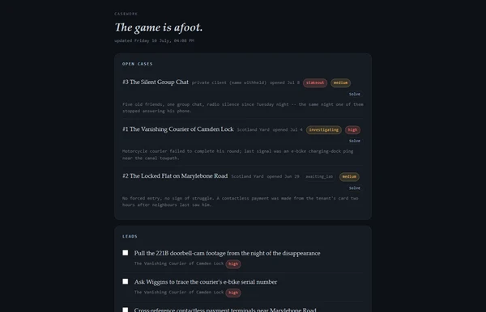
My life admin in one SQLite database on my own PC, with an offline-first Android app, browser dashboards, and an agent on top.

Log an expense in one field when it happens, so the details are still there when it's time to file the Concur report.
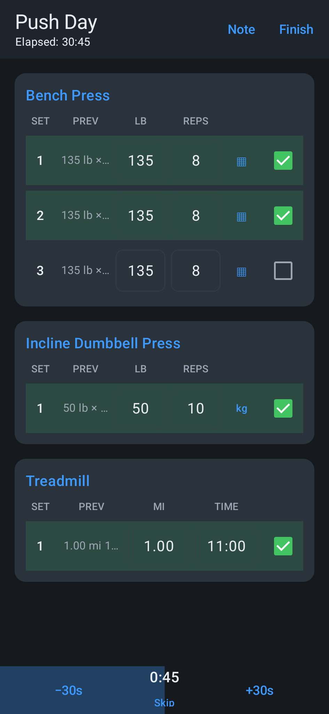
An offline lifting and PT tracker for Android, with timed and cardio sets, progression suggestions, and workout history kept on your phone.

Scores Steam sales against what I actually play, and picks a game everyone on the call already owns.
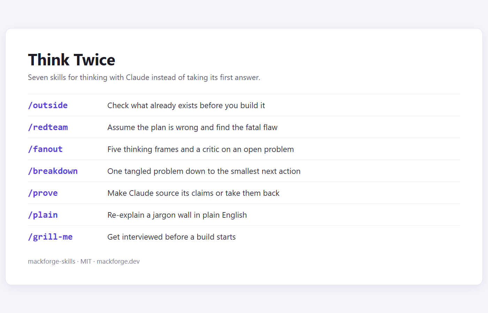
Seven commands for checking prior art, testing a plan, exploring alternatives, breaking down a problem, checking claims, explaining jargon, and interviewing before a build.
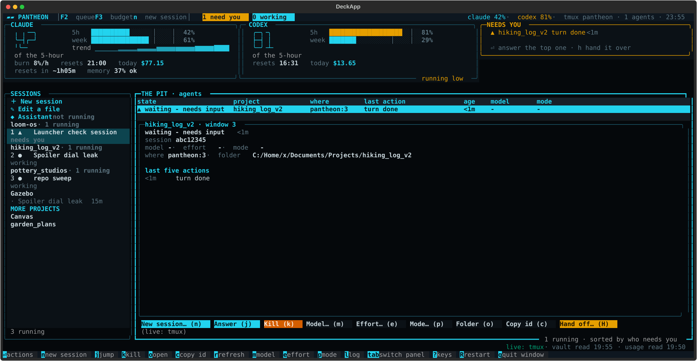
A terminal deck for running coding agents from your desk or phone, with sessions, task queues, and subscription usage in one place.

Turns a calendar file into a spreadsheet right in the browser, with nothing uploaded.
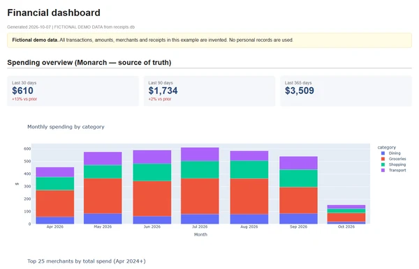
Matches email receipts and card statements against a budgeting-app export, into a local database and a dashboard.
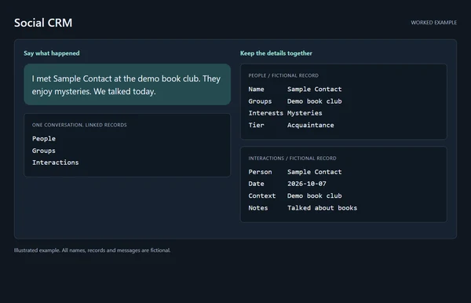
A personal social CRM in Airtable that works by hand or through an agent.
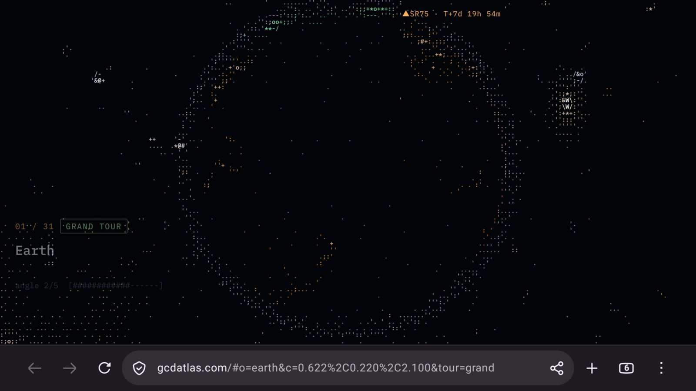
Put a website on your Android TV home screen as its own button, with a guide to setting up the TV and a small app that opens the page full screen.
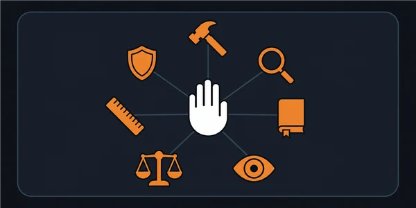
Checkpoint files, hooks, and skills that carry a project from one agent session to the next.
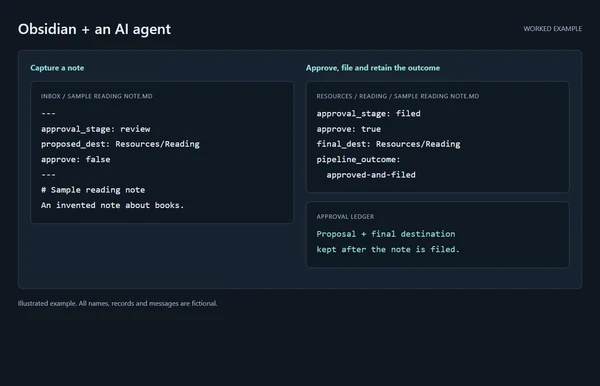
How I capture notes on my phone and let an agent file them into an Obsidian vault, with approval gates along the way.
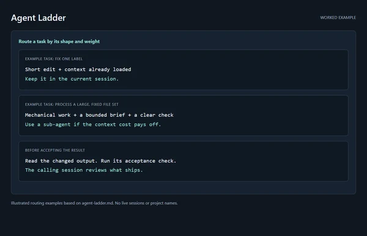
Which agent or model gets which job, and when work should be handed down to a cheaper one.
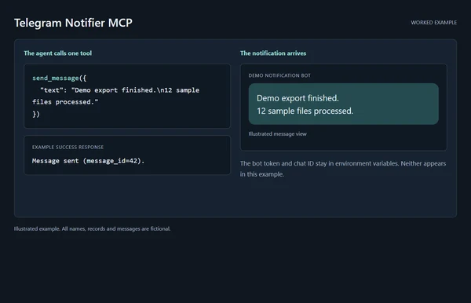
Gives an agent one tool, sending me a Telegram message when the long job finishes.
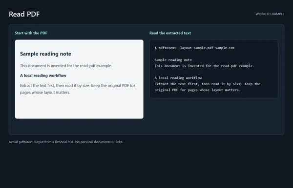
An agent skill that reads web pages saved as PDFs for a fraction of the tokens.
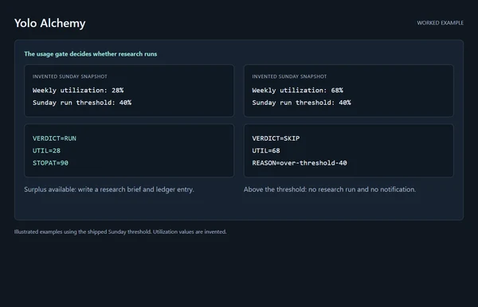
An overnight agent that spends leftover weekly quota pulling ideas from unrelated fields into my projects.
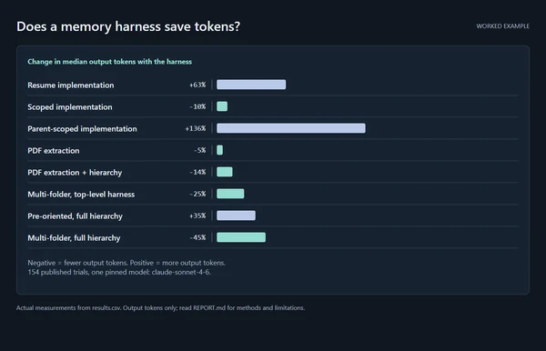
A 154-trial benchmark of whether the harness actually makes agents cheaper and more reliable, including what did not work.
Try another search or clear the filters to see everything.